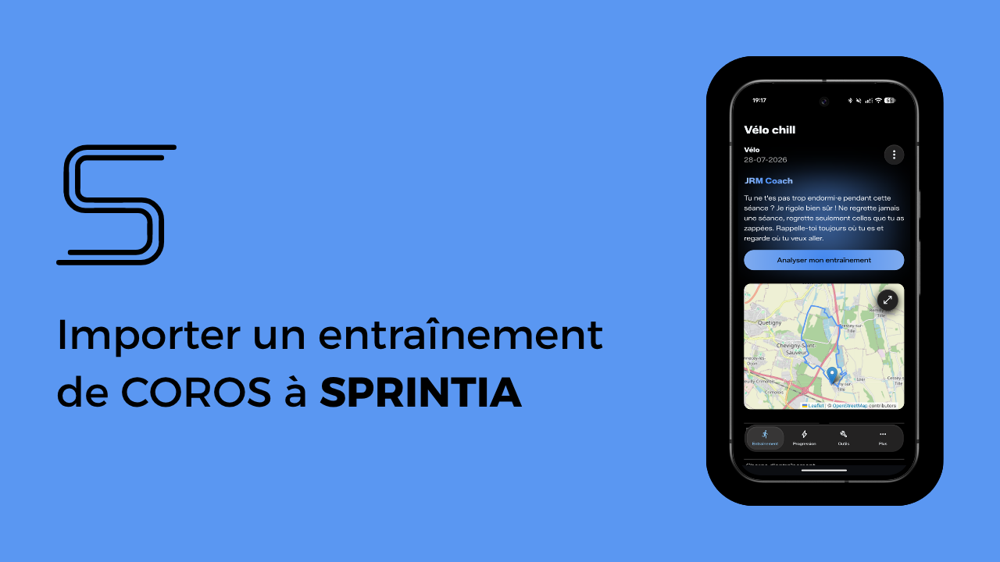
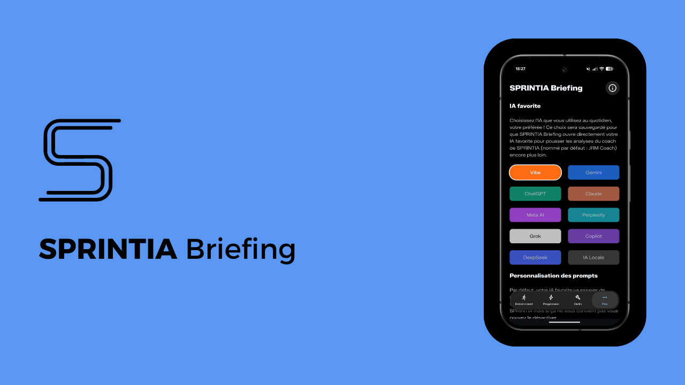

Entraînement
Progression
Outils
Plus
J'ai réalisé quelques vidéos pour vous aider à prendre en main SPRINTIA et à l'utiliser au mieux. N'hésitez pas à me suggérer des sujets de vidéos que vous aimeriez voir.
Guide de démarrage - Installation & Configuration
Comment importer votre entraînement sur SPRINTIA depuis Strava ?

Comment importer votre entraînement sur SPRINTIA depuis COROS ?

Comment utiliser SPRINTIA Briefing ?